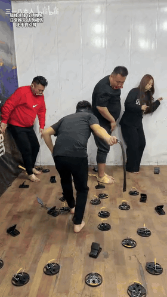
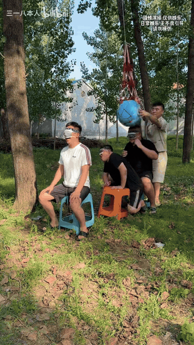
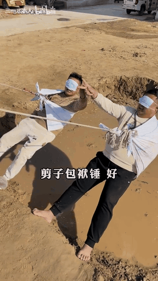
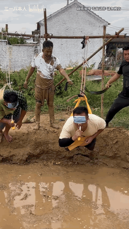

💥 Le champ de mines
Un parcours à l'aveugle… et une bonne raison de sauter!
Quatre vrais moments découpés directement des vidéos du groupe 三一八本人. Les GIF bougent automatiquement. Sur iPhone, ouvre un GIF puis garde le doigt dessus pour l’enregistrer dans Photos et l’envoyer sur Messenger.

Un parcours à l'aveugle… et une bonne raison de sauter!

Le défi finit en arrosage et éclats de rire.

Quand la mauvaise corde signifie finir dans le fossé.

Un final spectaculaire, directement tiré de la vidéo.